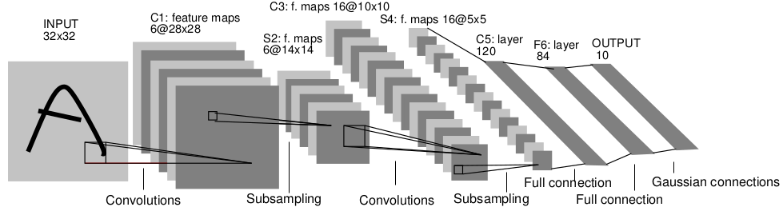
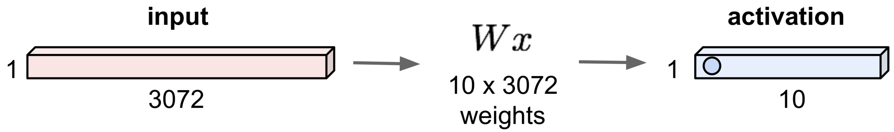
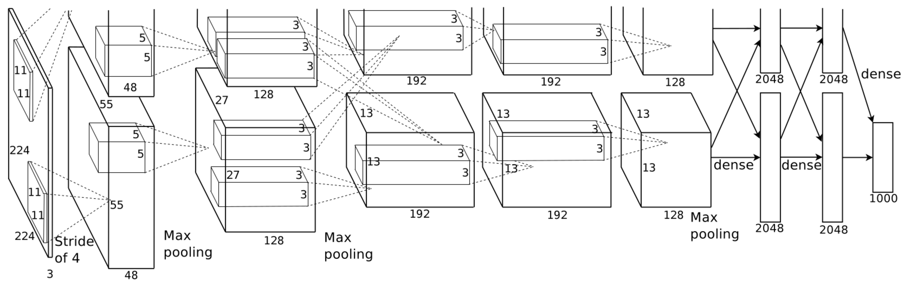

<h1> Neural Networks <br/> and <br/> Machine Learning </h1> ### Week 4: Neural Networks for Vision ### Instructor: Prof. Emre Neftci <center>https://canvas.eee.uci.edu/courses/21750</center> <center>http://tinyurl.com/nmi-lab-appointments</center> [](?print-pdf)
<h1> Deep Learning Goody Bag I</h1> <h2> Cross-Entropy, Regularization Normalization </h2>
## Loss functions and optimizers - torch.nn.MSELoss: Mean-Squared Error, default for regression tasks $$ L_{MSE} = \frac1N \sum_{n} \sum_i (y_{ni}-t_{ni})^2 $$ - torch.nn.CrossEntropyLoss: Default for classification tasks $$L_{XENT} = - \frac1N \sum_n \sum_i t_{ni} \log y_{ni}$$
<h2> Why Cross Entropy? </h2> <ul> <li /> Often in machine learning and classification problems, we are interested in the probability of a category given the input: $$p_\Theta(Predicted Category| Data)$$ <li /> Class labels provide ground truth data such that $$q(True Category| Data)=1$$ <li /> To fit the true distribution, we should modify the parameters $\Theta$ such that $p_\Theta$ is closer to q <li />Minimizing Cross-entropy (XENT) is one way to achieve this $$ H_p(q) = -\sum_y q(z)\log_2\left(p(z)\right) $$ </ul>
<h2> Cross Entropy </h2> Cross-entropy (XENT): Average length of a message from $q$ using code for $p$ <div class=row> <div class=column> </div> <div class=column> </div> </div> <p class=ref>https://colah.github.io/posts/2015-09-Visual-Information/</p> <ul> <li /> $H_p(q) = H(q) + D_{KL}(q||p)$ <li /> Minimizing XENT is similar to minimizing the Kullback-Leibler (KL) divergence, which is itself a measure of distance between probability distributions. </ul>
<h2> Cross Entropy Loss </h2> <ul> <li /> For targets with no uncertainty, $q(z|x)=1$ if $z=t$, and $q(z|x)=0$ otherwise. (= one-hot distribution) $$\begin{split} H_p(q|x) &= -\sum_z q(z|x)\log_2\left(p(z|x)\right) \\ H_p(q|x) &= - \log_2\left(p(z=t|x)\right) \end{split}$$ <li class=fragment /> We define our network output $y_i^n(x)$ to be the likelihood $p(z=i|x^n)$ <li class=fragment /> We average XENT across all samples: $$\begin{split} \mathcal{L}_{XENT} &= - \frac1N \sum_n \log_2\left(y_{t}^n(x)\right) \end{split}$$ </ul> <div class=fragment> <p class=pl>But $\sum_i p(z=i|x^n)= \sum_i y_i(x^n)$ should sum to one! So far our network does not have such a restriction.<p> </div>
<h2> Softmax </h2> <ul> <li> One possibility would be to use $\frac{a_i^n}{\sum_j a_j^n }$ as output for each unit. The cross-entropy loss becomes: $$\mathcal{L}_{XENT} = \log\left(a_{i}^n\right) - \log\left(\sum_j a_{j}^n\right)$$ <ul> <li /> Not great: $a$ could be negative. Also see what happens if a constant is added. </ul> </li> <li class=fragment > The Softmax function is the preferred method $\frac{\exp(a_i^n)}{\sum_j\exp(a_j^n)}$ $$\begin{split} \mathcal{L}_{XENT} &= \log\left(\exp(a_{i}^n)\right) - \log\left(\sum_j \exp(a_{j}^n)\right)\\ \mathcal{L}_{XENT} &= a_{i}^n - \log\left(\sum_j \exp(a_{j}^n)\right) \end{split}$$ <ul> <li /> The exp "undos" the log. Softmax is invariant to an addition of a constant </ul></li> </ul> <div class=fragment> <p class=pl>Use the softmax only when the loss involves a log function! Don't use it with MSE!</p> </div>
<h2> Binary Cross Entropy (BCE) </h2> - Cross entropy is a multiclass generalization of binary cross entropy: $$ C_{BCE} = - \frac1N \sum_n t_n \log (y_n) + (1-t_n) \log (1-y_n) $$
<h2> Goody I.1 </h2> <ul> <li /> For classification tasks, use cross entropy and softmax together, as follows <pre><code class="Python" data-trim data-noescape> criterion = torch.nn.CrossEntropyLoss() loss = criterion(outputs, labels) #labels are NOT one hot </code></pre> <li /> Note that CrossEntropyLoss applies the softmax internally. Hence your network's output should <b>not</b> have any activation function in the last layer. <li /> Note that $$\arg\max_i(softmax(y_i)) = \arg\max_i(y_i),$$ so you never need to apply the softmax function if you are only interested in classification. </ul>
## Regularization Regularization can improve generalization error. The simplest regularization technique is to add a term to the cost: $$ C_{total} = C_{task} + \lambda R(W) $$ For example: - L2 Regularization: $R(W) = \sum_{ij} W_{ij}^2$ <pre><code class="Python" data-trim data-noescape> opt = torch.optim.Adam(net.parameters(), lr=1e-3, weight_decay=1e-3) </code></pre> - L1 Regularization: $R(W) = \sum_{ij} |W_{ij}|$ <pre><code class="Python" data-trim data-noescape> l1_loss = 0 for param in net.parameters(): l1_loss += torch.sum(torch.abs(param)) loss_total = loss + l1_loss </code></pre>
## Regularization: Dropout In the forward pass, randomly set the output of some neurons to zero. The probability of dropping is generally 50% <img src="img/dropout.png" /> <p class=ref>Srivastava et al, Dropout: A simple way to prevent neural networks from overfitting, JMLR 2014</p> - Dropout is used as a layer placed *after* activation functions <pre><code class="Python" data-trim data-noescape> torch.nn.DropOut(.5) </code></pre>
## Regularization: Dropout Why is this a good idea? <img src="img/dropout_why.png" /> <p class=ref>Li et al. CS231n Stanford.</p> - Dropout can be shown to have a regularizing effect (e.g. improves generalization error)
## Regularization: Dropout at Test Time At test time, units are not dropped out, but activities are scaled by the probability. - The dropout layer can do this automatically, but you must explicitely set the network into training and evaluation mode: <pre><code class="Python" data-trim data-noescape> net.train() #network is in training mode, dropout is applied ... #do training net.eval() #network is in testing mode, dropout is disabled, activities are scaled </code></pre>
<h2> Goody I.2 </h2> <ul> <li /> Use dropout between fully hidden layers outputs or the output of a group of hiddens layers at a rate of .5 for effective regularization <pre><code class="Python" data-trim data-noescape> dropout = torch.nn.Dropout(0.5) dropout(x) </code></pre> <li /> In convolutional networks, use 2D dropout to drop the entire feature <pre><code class="Python" data-trim data-noescape> dropout2d = torch.nn.Dropout2d(0.5) dropout2d(x) </code></pre> <li /> Some use low rate (.25) dropout at the input <li /> Don't use dropout after the output layer <li /> If still overfitting, use weight decay (L2 norm). If sparse activity is desired, use L1 norm </ul>
<h2>Weight Initialization</h2> <img src="img/Glorot_fig6.png" /> <p class=ref> Glorot and Bengio, 2010 </p> <ul> <li /> The parameters in a neural netwok must be initialized to some value. Setting all values to zero can be problematic, and should be avoided. <li /> Some randomness is necessary to "break symmetries". The magnitude of the randomness must be carefully adjusted so the activities do not saturate/die across the network. <li class=fragment /> PyTorch layers generally use initialization that is dependent on the layer sizes. Generally it uses the "Xavier initialization" $W \sim U[-\frac{\sqrt{6}}{N^{in} + N^{out}}, \frac{\sqrt{6}}{N^{in} + N^{out}}]$ </ul>
<h2> Goody I.3 </h2> <ul> <li /> If using standard layers, use the default settings! <li /> On custom layers, try using the Xavier method, if using Relu, try using $U[-\frac{\sqrt{2}}{N},\frac{\sqrt{2}}{N}]$ <p class=ref>https://arxiv.org/abs/1502.01852</p> </ul>
<h1> Convolutional Neural Networks </h2>
<h2>Deep Neural Networks with Structure: Convolutional Neural Networks</h2> <ul> <li />Nearly all state-of-the-art algorithms in AI/ML have a deep learning component, often in the form of structured neural networks known as Convolutional Neural Networks </ul> <img src="img/typical_cnn.png" class=stretch/> <p class=ref>LeCun_etal98</p> <p class=pl>CNNs can learn end-to-end and outperform humans on certain recognition tasks</p>
<h2>Challenges in computer vision</h2> <p class=ref>Image from Stanford CS231n Convolutional Neural Networks for Visual Recognition Class</p>
<h2>Hierarchical Organization of the Visual Pathway</h2> <div class=row> <div class=column></div> <div class=column></div> </div> <p class=ref>Felleman and Van Essen, 1991 (left), Cerebral Cortex 1:1-47. Serre and Poggio, 2007 (right)</p> <p class=pl>Neurons higher in the hierarchy represent more abstract features</p>
<h2>Tuning Curves</h2> <p class=ref>Hubel & Wiesel, 1968</p>
<h2>Tuning Curves</h2> <video> <source data-src="hubel_wiesel.mp4" type="video/webm" /> </video>
<h2>Receptive Fields</h2>
<h2>Retinotopic Map</h2> <p class=ref>Matteo Carandini (2012), Scholarpedia, 7(7):12105</p> <p class=pl>Nearby points in visual field project to nearby neurons in V1</p>
<h2>Columnar Organization of V1</h2> <img src="img/cortical_column.png" class=stretch/> <p class=ref>Right: Blasdel & Salama (1986)</p> <p class=pl>The receptive fields are tiled to cover the entire visual field</p>
<h2>Mimicking features of visual cortex in neural networks</h2> <b>Neocognitron: Precursor of Convolutional Neural Networks</b> <p class=ref>Fukushima, 1980</p>
<h2>Mimicking features of visual cortex in neural networks</h2> <b>LeNet: Gradient-based learning applied to document recognition</b>  <p class=ref>LeCun_etal98</p>
<h2>Applications of Convolutional Neural Networks</h2> <ul> <li/> Image Recognition <p class=ref>Google Research Blog, 2014</p> <li/> Speech Recognition, speech generation (Wavenet) <li/> Drug Discovery, Finance, Robots, Games, ... </ul> <p class=pl>Deep convnets are state-of-the-art most of these applications</p>
<h2>Convolutional Neural Networks</h2> <img src="img/cnn.png" class=stretch/> The visual cortex and neural networks solve the same task: use <b>retinotopy</b>, <b>local receptive fields</b> and <b>hierarchy</b> to constrain fully connected neural networks. Two new type of layers: <ul> <li/> Convolutions <pre><code class="py" data-trim data-noescape> torch.nn.Conv2d(in_channels, out_channels, kernel_size, stride=1, padding=0, bias=True, padding_mode='zeros') </code></pre> <li/> Sub-sampling layers (pooling) <pre><code class="py" data-trim data-noescape> torch.nn.MaxPool2d(kernel_size, stride=None, padding=0, dilation=1, return_indices=False, ceil_mode=False) </code></pre> </ul> <p class=ref>Following figures from Stanford cs231n course</p>
<h2>Fully Connected Layer vs. Convolution Layer</h2> <ul> <li/>Fully Connected Layer: Ignores structure  <li/> Convolutional Layer: Preserves Structure </ul> <ul> <li/> The filter is the receptive field of the neuron </ul>
<h2>Convolutional Layer: Activation Maps</h2> $$\text{output hidden unit (0,0)} = \left(b_0 + \sum_{l=0}^5 \sum_{m=0}^5 w_{lm} x_{0+l, 0+m} \right).$$
<h2>Convolutional Layer: Activation Maps</h2> $$\text{output hidden unit (1,0)} = \left(b_1 + \sum_{l=0}^5 \sum_{m=0}^5 w_{lm} x_{1+l, 1+m} \right). $$ $$\text{output hidden unit ($i$, $j$) for feature $p$} = \sigma \left(b_{p} + \sum_{l=0}^5 \sum_{m=0}^5 w_{lm}^p x_{i+l, j+m} \right).$$
<h2>Convolutional Layer: Activation Maps</h2> $$\text{output hidden unit ($i$, $j$) for feature $p$} = \sigma \left(b_{p} + \sum_{l=0}^5 \sum_{m=0}^5 w_{lm}^p x_{i+l, j+m} \right).$$ <ul> <li/> Convolution layer instead of matrix multiplication: still need to apply non-linearity <li/> <b>Key aspect of convolutional layers: the parameters of the receptive field are shared across neurons in the same activation/feature map</b> <li/> Convolutional layers without weight sharing are called locally connected layers. </ul>
<h2>Convolutional Layer Parameters</h2> <img src="img/depthcol.jpeg" class=small /> <p class=ref>Stanford CS231n class slides</p> <ul> <li/> Depth: Number of filters <li/> Kernel Size F: Dimension of the filter (usually square) <li/> Stride: The number of pixels by which we slide the filter <li/> Padding: Coping with boundaries by adding zeros around the input (padding = same means zero padding is active) </ul> Output size: (N - F) / stride + 1 Convolution layers parameters are typically chosen such that the output size is the same as the input size.
<h2>Pooling (Subsampling)</h2> Several pooling methods exist. Most Common are: $$\text{max-pooling unit ($i$, $j$)} = \max\left( x_{i+0, j+0}, x_{i+0, j+1}, x_{i+1, j+0}, x_{i+1, j+1} \right)$$ $$\text{mean-pooling unit ($i$, $j$)} = \frac14 \left( x_{i+0, j+0}+ x_{i+0, j+1}+ x_{i+1, j+0}+ x_{i+1, j+1} \right)$$ <p class=pl>Pooling discards positional information to reduce dimensionality of the layer (down-sampling)</p>
<h2>Example: max pooling</h2> <div class=row> <div class=column ></div> <div class=column ></div> </div> <p class=pl>When the precise location of a feature may not be critical, max pooling is recommended. Otherwise use strides larger than one or mean pooling</p> <p class=ref>Stanford CS231n class slides</p>
<h2>Typical Convnets</h2> <ul> <li/> Typical Convnet architectures are of the form: $$ \underbrace{\underbrace{Conv \rightarrow ReLU ... \rightarrow Conv \rightarrow ReLU}_\text{N times} \rightarrow Pool}_\text{M times} \rightarrow FC \rightarrow ReLU \rightarrow Softmax $$ <li/> They are often described as tables: <div class=row> <div class=column ></div> <div class=column ></div> </div> <p class=ref>Kingma and Salimans, 2016, Simonyan and Zisserman, 2014</p> <li/> Pre-trained networks are available online, e.g. through torchvision </ul>
## Pre-trained models - Large neural networks can take days to train only multiple GPUs! - PyTorch provides pre-trained networks, see here https://pytorch.org/docs/stable/torchvision/models.html - Caution: Some "famous" networks will result in downloading >.5Gb of parameter data - Pretrained vision models expect a certain data format: > All pre-trained models expect input images normalized in the same way, i.e. mini-batches of 3-channel RGB images of shape (3 x H x W), where H and W are expected to be at least 224. See the demo here: [](https://drive.google.com/open?id=1MhWTlomhCAkJ_nRjQrP4_oP8uU580Vag)
<h2>Krizhevsky et al. architecture</h2>  <p class=ref>Krizhevsky_etal12</p> <b>Features obtained at the first convolutional layer</b>
## Convolutional Neural Network (LeNet) Module <div class=row> <div class=column> <pre><code class="py" data-trim data-noescape> class LeNet(torch.nn.Module): def __init__(self): super(LeNet, self).__init__() self.conv1 = torch.nn.Conv2d(1, 32, 3, 1) self.conv2 = torch.nn.Conv2d(32, 64, 3, 1) self.dropout1 = torch.nn.Dropout2d(0.25) self.dropout2 = torch.nn.Dropout2d(0.5) self.pool2 = torch.nn.MaxPool2d((2,2),(2,2)) self.fc1 = torch.nn.Linear(9216, 128) self.fc2 = torch.nn.Linear(128, 10) def forward(self, x): x = self.conv1(x) x = torch.relu(x) x = self.conv2(x) x = self.pool2(x) x = torch.relu(x) x = self.dropout1(x) x = torch.flatten(x, 1) x = self.fc1(x) x = torch.relu(x) x = self.dropout2(x) x = self.fc2(x) return x </code></pre> </div> <div class=column></div> </div> <ul> <li /> This module can be used similarly to our FCN in Week 3 <li /> Note that you should <b>not</b> flatten the input before feeding in the network </ul>
## In-class assignment <ul> <li /> Calculate the number of parameters in LeNet and in the FCN. Which one is larger? What does this entail? <li /> Modify the script of Week 3 using the fully connected Layer, use Cross Entropy and Softmax </ul> [](https://drive.google.com/open?id=16qd1IgQdKXdhOj5vGkrMms2wh7PACIE_)
<h2>Analyzing Convolutional Neural Networks</h2> <ul> <li/>Patterns that maximally activate the neuron roughly correspond to a local maximum of the tuning curve. <li/>To find it, one can maximize activity by gradient descent. $$ \hat{x} = \mathrm{argmax}_x y_i(x) $$ <li/><b>Deep Dream</b> <p class=ref> Google Blog, June 2015</p> [](https://drive.google.com/open?id=1Uy0nWFaoNQ-QuLIH8-ANp2NMpo_WFNBU)